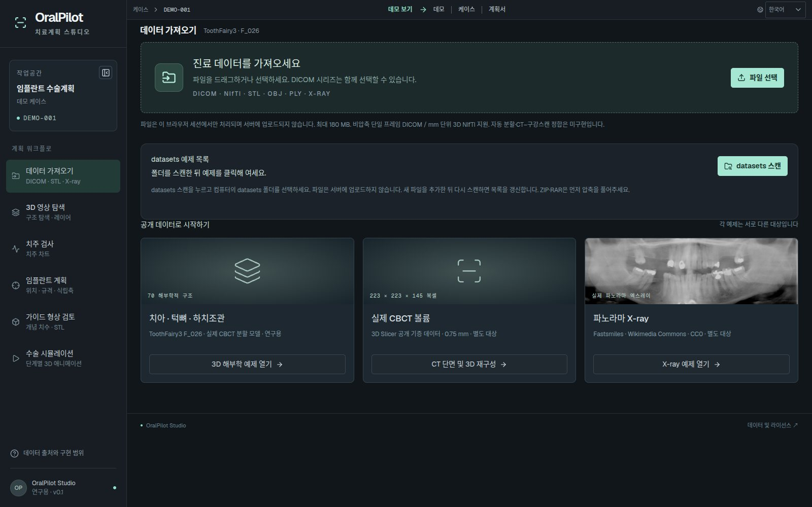
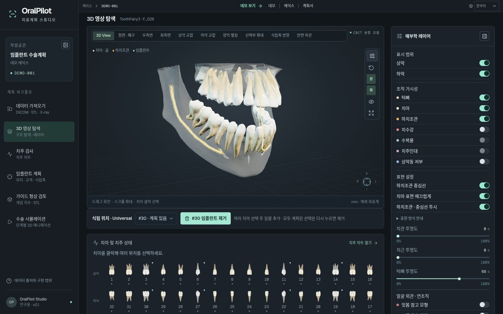
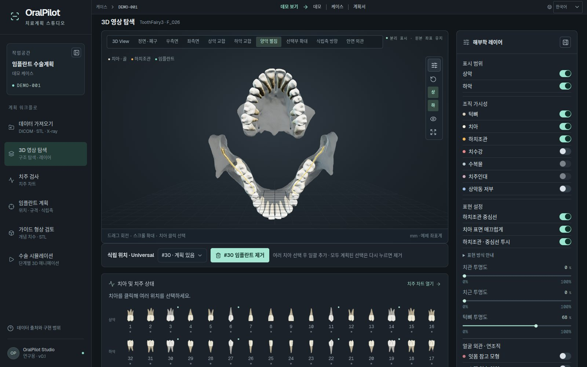
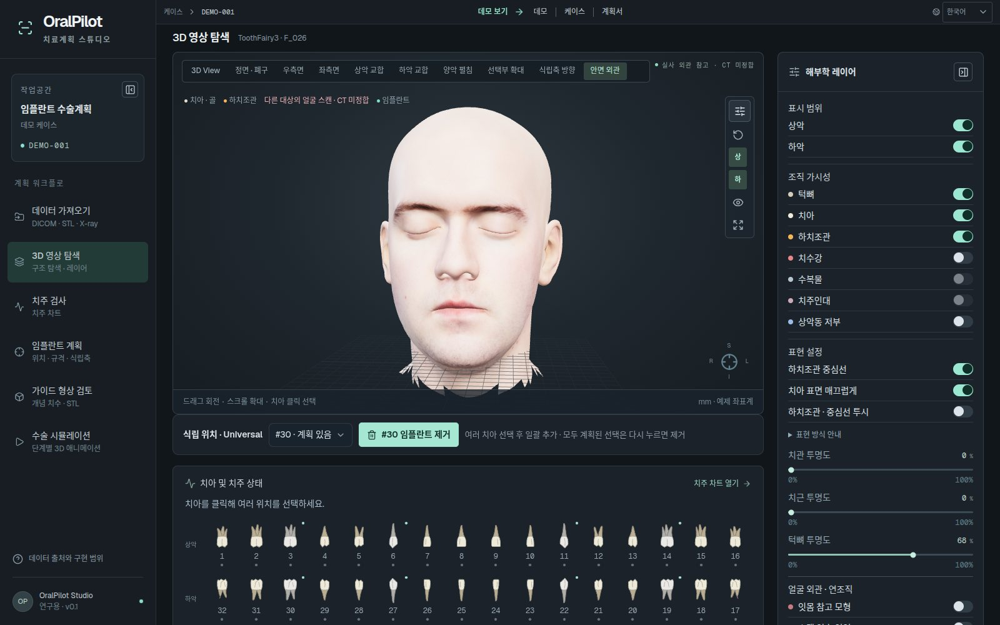
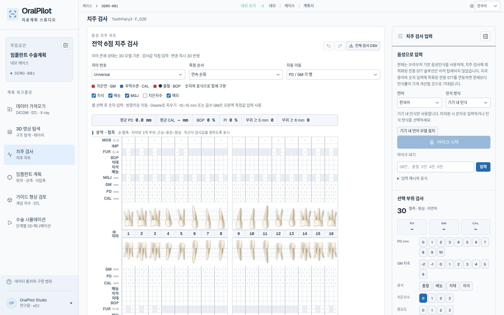
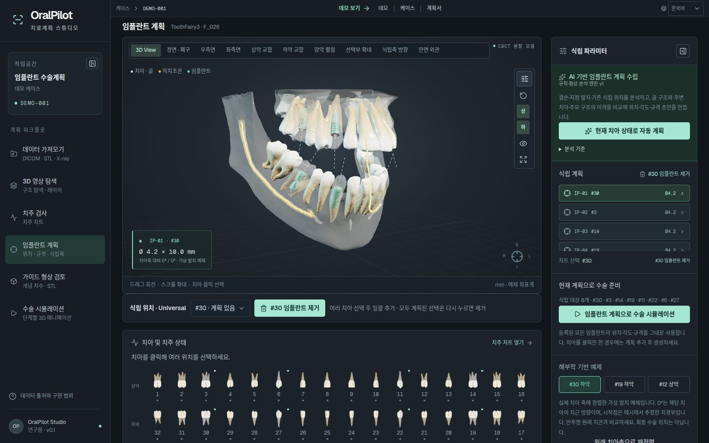
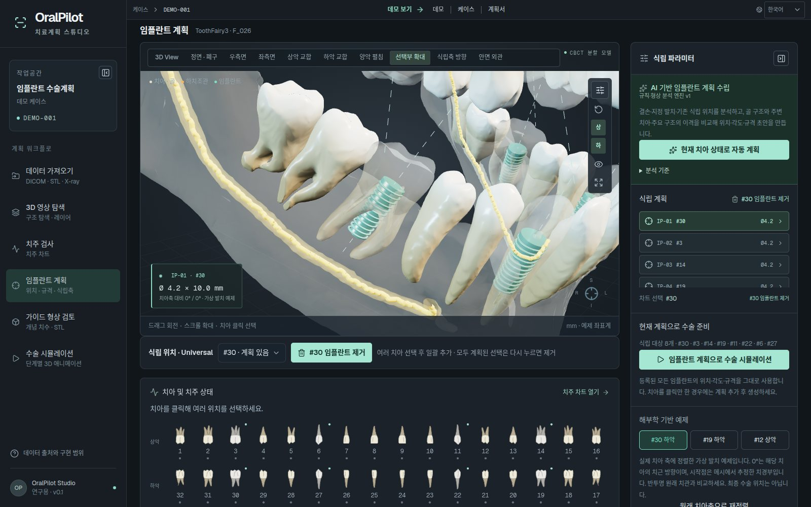
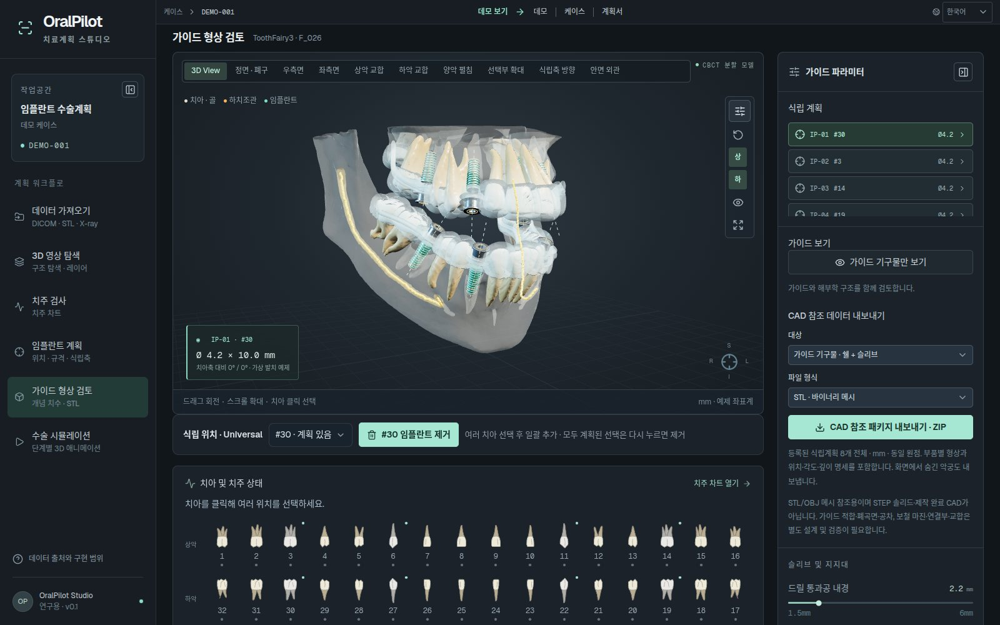
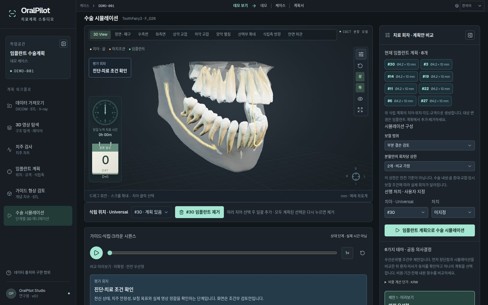

솔루션 OralPilot
OralPilot
3D 해부학, 치주 차트, 임플란트 배치, 수술 시뮬레이션을 단일 워크플로로 통합한 임플란트 치료계획 스튜디오입니다. 진료 파일은 서버로 보내지 않고 브라우저 안에서만 처리합니다.
- DICOM · NIfTI · STL · X-ray 입력 — 파일은 브라우저 안에서만 처리
- 치아 · 턱뼈 · 하치조관 등 70개 구조의 3D 탐색과 6점 치주 차트
- 규칙·형상 분석으로 위치 · 각도 · 규격 초안 생성
- 가이드 형상 검토와 단계별 수술 시뮬레이션

워크플로
- 데이터 가져오기
- 3D 영상 탐색
- 치주 검사
- 임플란트 계획
- 가이드 형상 검토
- 수술 시뮬레이션
스크린 데모
주요 화면 둘러보기
라이브 데모의 주요 화면 9장으로 기능을 소개합니다. 이전·다음 버튼이나 화살표 키, 아래 목록으로 넘겨 보세요. 직접 사용해 보려면 라이브 데모를 여세요.
-
01 / 09
데이터 가져오기
DICOM·NIfTI·STL/OBJ/PLY·X-ray 파일을 불러옵니다. 파일은 서버로 보내지 않고 브라우저 안에서만 처리합니다.
- DICOM 단일 프레임 시리즈 정렬·검증, NIfTI 읽기
- CT 임계값 기반 표면 추출(Marching Cubes)
- 표면 파일은 원본 좌표를 유지한 채 조립
-

02 / 09
3D 영상 탐색
공개 CBCT 분할에서 유래한 70개 구조를 레이어별로 탐색합니다.
- 치아 32 · 치수강 32 · 상·하악골 · 좌우 하치조관 · 상악동 저부
- 구조별 표시·숨김, 치관·치근·골 투명도
- 정면·측면·교합면·식립축 방향 등 10개 시점
-

03 / 09
양악 펼침
상·하악을 펼쳐 교합면과 하치조관을 한 화면에서 봅니다.
- 하치조관 표면과 중심선을 같은 변환으로 표시
-

04 / 09
안면 외관
실물 얼굴 스캔을 겹쳐 치아와 안면의 관계를 확인합니다.
- 안면 마스크·연조직 불투명도 설정을 기억하고 복원
- 필요할 때만 대용량 자산을 불러옴
-

05 / 09
치주 검사
치아별 6점 치주 차트를 기록하고, 3D 탐색과 식립 계획이 같은 기록을 공유합니다.
- PD · GM · CAL, BOP · 치태 · 치석, 동요도 · 이개부
- 음성·문자 명령 입력 (예: "46번, 출혈, 5 4 6")
- Universal · FDI · Palmer 번호 체계, CSV 가져오기·내보내기
-

06 / 09
임플란트 계획
여러 가상 식립계획의 규격과 식립축을 편집합니다.
- 직경·길이, 치아축 대비 경사각, 근원심·협설 이동, 깊이
- 하치조관·상악동까지의 근사 이격 표시
- 치아 선택과 일괄 추가, 규칙·형상 분석 기반 계획 초안
-

07 / 09
선택부 확대
선택한 식립 부위를 확대해 원래 치아축과 계획축을 비교합니다.
- 원래 치아 기준축(청색)과 실제 계획축(황색)
- 계획 치아는 반투명으로 표시
-

08 / 09
가이드 형상 검토
계획에 따라 달라지는 가이드 개념 형상을 검토합니다.
- 부분 치열 쉘 · 금속 슬리브 · 드릴 구멍
- 가이드 기구물만 보기
- CAD 참조 패키지(STL · OBJ ZIP) 내보내기 — 연구용
-

09 / 09
수술 시뮬레이션
가이드 장착부터 드릴링·식립·회복·보철까지 단계별 3D 애니메이션으로 확인합니다.
- 회차 비교안 최대 3개, 안전 우선·비용 절감 등 6가지 관점 비교
- 환자·의사 동의 확인 후 공동 선택 기록
- 계획 JSON 저장, 인쇄용 HTML 계획서
모델 규모
작업 환경 구성
해부 구조는 공개 CBCT 분할 데이터(ToothFairy3)에서 유래한 연구용 예제입니다.
사양
주요 사양
| 해부 구조 | 공개 CBCT 분할 유래 70개 — 치아 32, 치수강 32, 상·하악골, 좌우 하치조관, 상악동 저부 |
|---|---|
| 입력 | DICOM 단일 프레임 시리즈 · NIfTI · STL/OBJ/PLY · X-ray 이미지, 최대 8천만 voxel · 180 MB, 브라우저 내 처리 |
| 표면 추출 | CT 임계값 Marching Cubes (최대 112³ 작업 격자) |
| 치주 차트 | 치아별 6점 PD/GM/CAL, BOP, 동요도, 이개부, 음성·문자 입력, CSV |
| 식립 계획 | 직경 · 길이 · 경사각 · 근원심/협설 이동 · 깊이, 하치조관·상악동 근사 이격 |
| 가이드 | 부분 치열 쉘 · 금속 슬리브 개념 형상, CAD 참조 패키지(STL/OBJ ZIP) |
| 시뮬레이션 | 가이드 장착 → 드릴링 → 식립 → 회복 → 보철 단계, 회차 비교안 최대 3개 |
| 저장 | 계획 JSON, 인쇄용 HTML 계획서, 브라우저 임시 저장 |
도입 상담
이 솔루션의 도입 범위를 함께 검토하겠습니다.